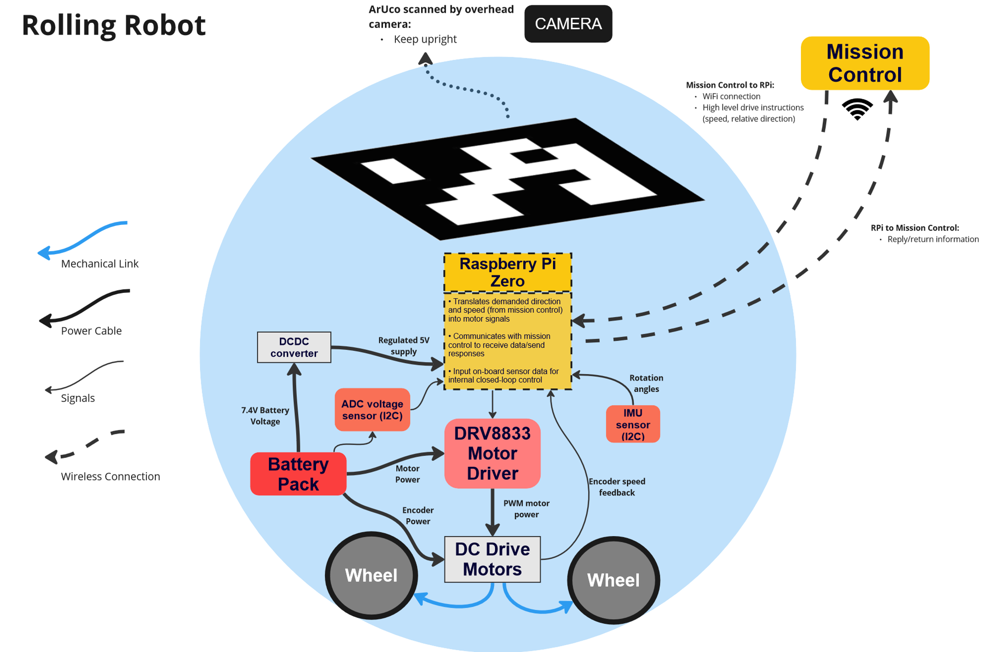
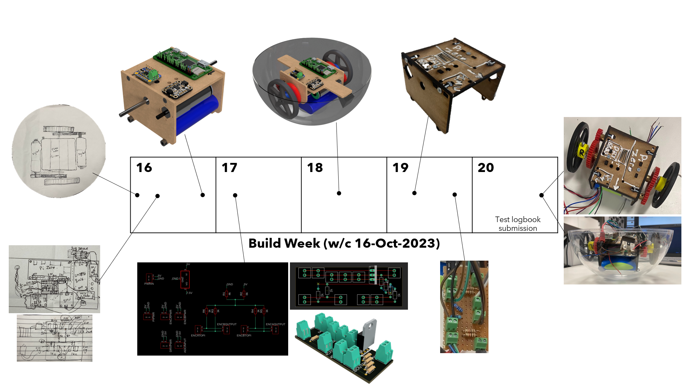
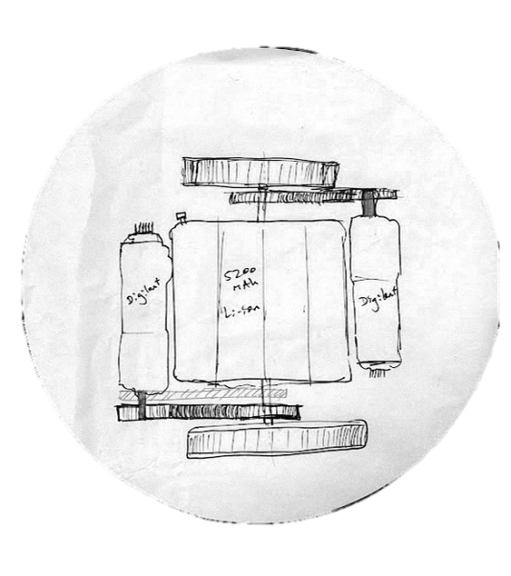
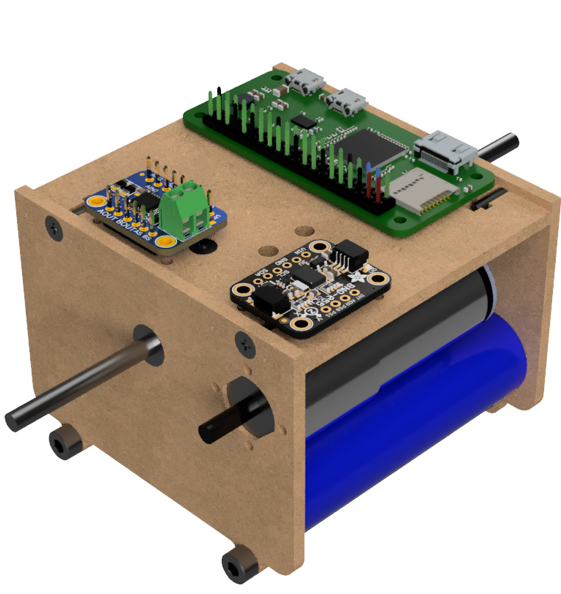
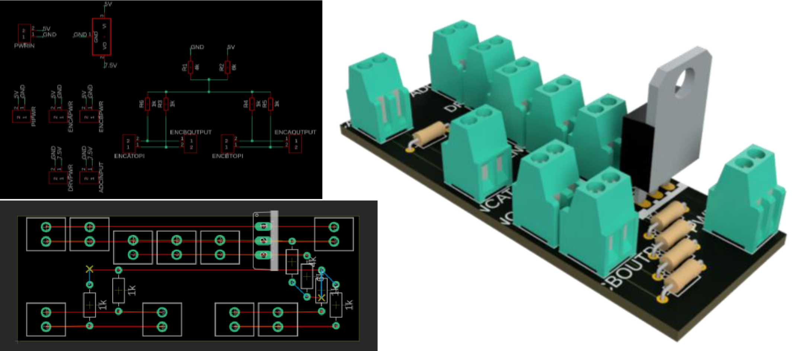
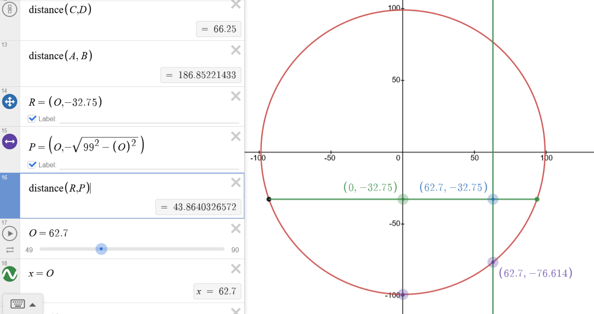
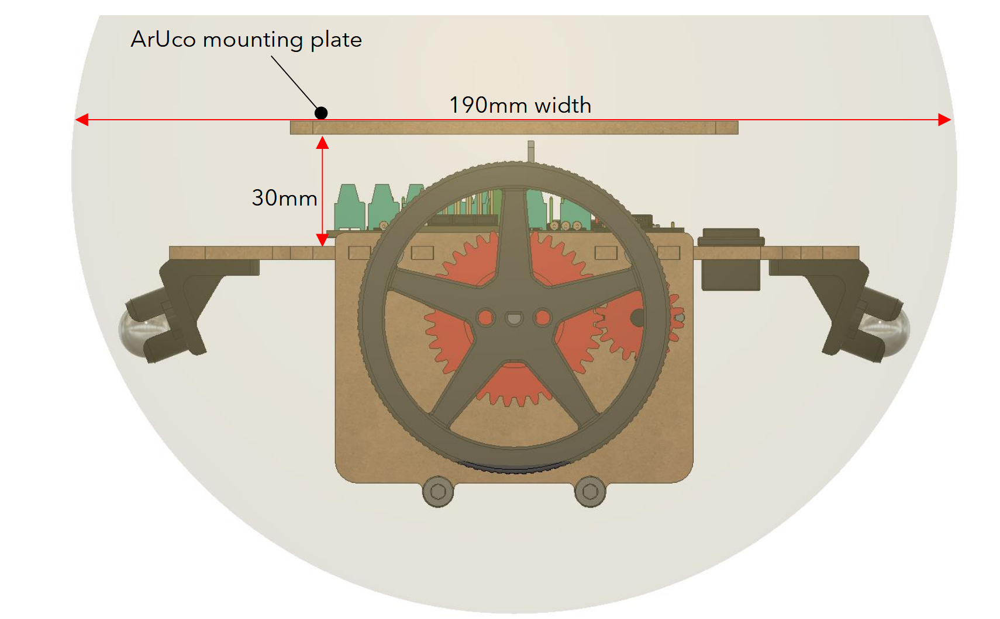
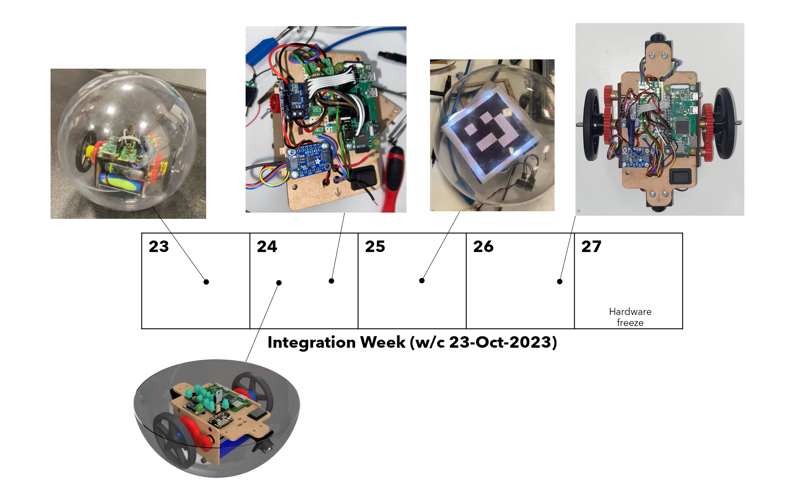
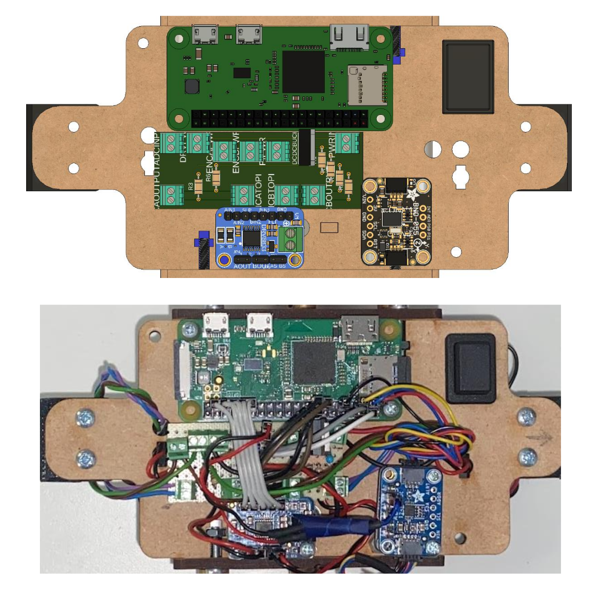
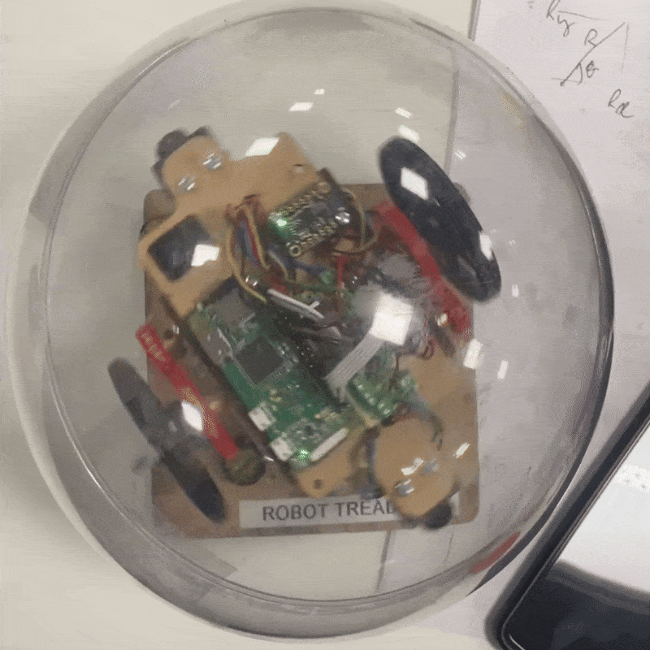

Working in teams of 4, we designed and constructed an autonomous robot housed inside a plastic sphere, controlled over WiFi using a Raspberry Pi. An ArUco barcode was used for tracking the robot from an overhead camera, which fed data to a 'mission control' PC running computer vision algorithms for navigation and control. The robot included an ADC for monitoring battery voltage, oscialltion damping with IMU data, and a backlit barcode for better camera tracking.
My role in the team was the mechanical design and electronics integration of the rolling robot. The block diagram highlights my responsibilities and dependencies with other team members' sub-systems.

DESIGN AND ITERATION
This project was structured with weekly deadlines for planning, requirements, building, and testing. This meant the design, build and integrate process was condensed into 2 weeks. This in turn meant that the design, test, fail, iterate loop had to be rapid to allow the maximum amount of time for integrating my system with the other team members' work.
After starting with rough mechanical diagrams and electrical layouts, I quickly moved to a first iteration of the assembly in CAD with detailed electrical
layouts. I iterated on the first design to quickly produce an improve robot design that was more stable, compact, and easier to assemble.
Key considerations were that the chassis was laser cut from MDF for speed of prototyping, and electronics were easy to access (for debugging, charging,
wiring)






FINAL DESIGN AND INTEGRATION
During the final integration phase, I worked on my dependencies to other team members' sub-systems (motor control, barcode placement). Ultimately, full integration was not achieved for the final demonstration. The integration process proved more complex than initially anticipated, highlighting valuable lessons about system-level planning and the importance of early integration testing in multi-disciplinary projects.



